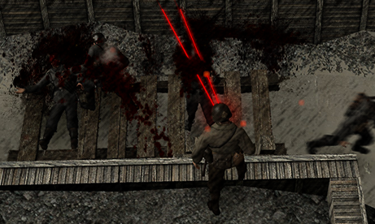
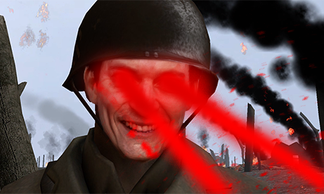
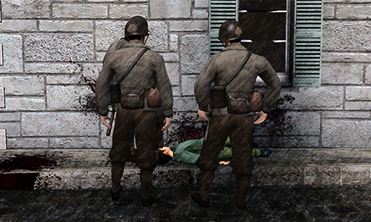
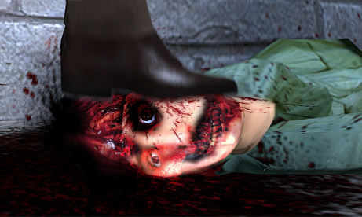
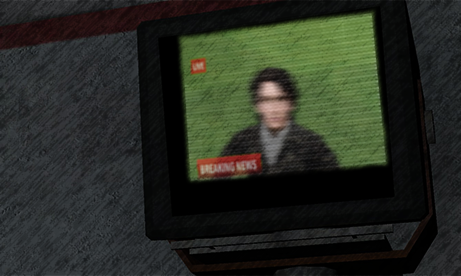

In 1827, the first ever powered-person was born. Lambert Grimm, Age 12. He had developed telekinesis at the age of 11 after an incident with his parents, After the shocking discovery of his powers. He decided to do talent shows for a living and show the people his many tricks with his new powers, during out his career in his mid 30-40s he became very desperate for lust and affection. Causing him to hook with tons of hookers and fans at the time, it was reported around 40-50 other women he had slept with. Almost all of them reported to have been pregnant, some even with twins. When Lambert had gotten the news he broke down and slowly realized what he had done. A few weeks later Lambert had taken his own life leaving all the women with the children on their own. The many children were also born powered, but not with the same power as Lambert. They all had their own unique powers, Levitation, X-ray Vision, Flame, Permeation, Mind-Reading, the list goes on and on. By the 1900’s it was reported 10% of the population was born powered, at first everyone was happy and well with their new powers and abilities. But since this is real life, nothing good lasts forever.
JULY 28 1914 - WORLD WAR 1
The first world war had begun, many of the powered citizens were drafted and sent into the army. The battlefields covered in blood and screams louder than ever before, soldiers and citizens getting punched through their guts and their heads flying off. Others were getting crushed with telekinesis from left to right, for years many of the people hid from the powered-soldiers in pure fear. Some even had to watch their family and friends getting executed by French and British powered-soldiers. Lasering them, causing their bodies to split in half as they attempt to scream for help crawling on the floor,

but the soldiers just stare and laugh seeing them slowly bleeding to death.

Some of the children were even captured and beaten up to death as the others that were hiding, had to stay quiet while they had to watch it all happen.


NOVEMBER 11 1918 - THE AFTERMATH
After the screams faded away and the blood washed into the ground from the rain. People celebrated at first for the war being over, but some later cried in agony after hearing about the loss of their loved ones. 62 million casualties, 35 million reported deceased while the remaining 27 million in critical condition. Few years later this caused hate towards powered-people. There were even protests to put the powered-people behind bars for good or even deport them out of their country, half of the powered-people decided to move around the world. Most flew to the United States while the others sailed to the United Kingdom. Many years later the population for powered-people went up to 25%. It remained calm for a while, until some pissbaby german got declined for some fucking drawings.
SEPTEMBER 1 1939
The second war had begun, even more powered-people were selected and drafted into the war. Causing even more casualties, but ending the war faster. During the war, It was found that Adolf Hitler hired Physicians to run experiments on powered-people. One of the physicians ,Josef Mengele. Discovered that they could extract others powers from powered citizens and inject them into the soldiers, this caused Hitler to demand soldiers from Schutzstaffel (SS) to raid people houses to not only find Jews, people of color, people with disabilities, gay people. But he specifically demanded people born with powers to be taken from their families and be put under experiments, a few months during the process. One of the subjects that originally applied to join the Army was found to be able to take multiple powers at once, they decided to mainly focus on them and once a week inject them with a new power that was either donated or stolen. The subject was later used as a weapon to take care and exterminate the Jews in the camps aftering finding it more efficient and less time consuming. Near the end of the war the subject suffered a mental breakdown and started lasering anyone in their eyesight, causing 600 deaths and 183 critically injured. The subject later flew away from the camp and escaped out of the country to never be seen again. causing Germany to lose the war for good.
SEPTEMBER 2 1945
85 million casualties, 71 million deaths and 14 million critically injured. Most of the surviving soldiers of the war were powered as some of them have been discovered to have been injected with enhanced strength. The powered Nazis had to be executed by British and American powered soldiers, some even took their own lives using their powers before the Allies had the chance. The subject was still not found and was later given the title “Belzec” as they were officially declared the most powered person in the world .They were written down in the history books as one of the most wanted people in the world. Adolf Hitler was also secretly a powered person and had the power of Manipulation (being able to control multiple and even being able to change their thoughts), He was later shot to death after ordering one of the commanders to shoot him directly in the head and then shooting themselves. In the United States of America everyone celebrated as fireworks were being set off and people in the streets cheering and even making out. Powered soldiers and jets seen flying in the sky for celebration. Everyone was happy and finally at peace as they all sat in their backyards grilling out some burgers as their family members returned home from the war. Hugging their parents and crying in joyfulness to see them again.
SEPTEMBER 23 2004
Decades later the powered population is now at 46%, The government officially declared schools and jobs for both powered and non powered-people to work together. Super High Schools and Superhero Departments, while more safer now for our society. Is now also more dangerous due to Supervillains. Crime rate raising and Budget for Super Academies and Superhero Departments now rising since 1986, reports of more casualties, villain attacks and suicides since 2001. Around the 2000s multiple medication had been developed and made for powered people to control themselves, they were mostly taken by powered-people with childhood trauma and mental disorders. Some reject the medication due to the side effects (loss of appetite, insomnia, dizziness, headaches, weight gain, exc) The Government decided to make Mental Asylums for the mentally-ill powered people. But other than that, everything else seemed alright since it was normal.
But for now let’s forget about all that nonsense, this story isn’t mainly about that boring stuff. This story is going to be about the life and adventure of our good little friend in Philadelphia who’s actually about to be born into this shitty fucking country, Welcome to the world.
The doctors surround Jonathon’s mother, Rose. As one of the doctors officially present her son to her, “Here he is!” she shed a tear in happiness “It’s a b-boy?” she stuttered. “Yes madam! Not to be rude, but I think that’s kinda obvious” the doctors points down revealing the baby as everyone in the room stare at him in shock “The fuckers bollocks are hangin!” said David, Jonathon’s Father. Rose laughs for abit as she tells David to be quiet, Rose slowly holds the baby in her hands as she stares at him in Joy.
“I’ll name you… Jonathon...”
“The only bad news is that your son is unfortunately not powered.” one of the doctors say to her, “Wait what how-” Before she could finish her sentence. Rosa’s twin sisters Julie and Michelle quickly knock at the door and open it “I’m sorry but Rosa turn on the news now!” “Why?” Rosa questioned “Just turn it on now!”
One of the doctors turns on the news station as they higher up the volume. The news currently showing a live feed from a helicopter showcasing the near end of a fight between Captain Platinum, the number one Pro-Hero in America. And the current most wanted villain in the world, Belzec’s Son. They stand in a football stadium as helicopters with spotlights surround them, the villain stands still. Accepting his fate, knowing he won’t make it out alive. Before Captain Platinum makes his move, the villain looks at the camera in the distance as the camera slowly pans towards their face. Before they could get a good look at the villain,

Captain Platinum quickly flies into them as they both fly out of the frame, part of the stadium starts to collapse due to the impact. A few moments later after the helicopter flying around the event, it cuts to a different camera on the ground and a news reporter rushing inside of the football stadium. Car alarms are heard going off as they struggle to get through the debris, the smoke surrounds them as you can hear coughing from the reporter and the camera-man. Eventually they see Captain Platinum in the distance, holding a dirty grey-hoodie with blood stains on it. He slowly pans down and sighs, turning around slowly. “He’s dead.”, staring into the camera while smiling proudly giving the thumbs up. Everyone starts to cheer in the hospital as others are heard celebrating outside, but Rose just stares at the TV for a few seconds then down to her son.
“I hope you know, I will always love you no matter what.” as she smiles down at him.